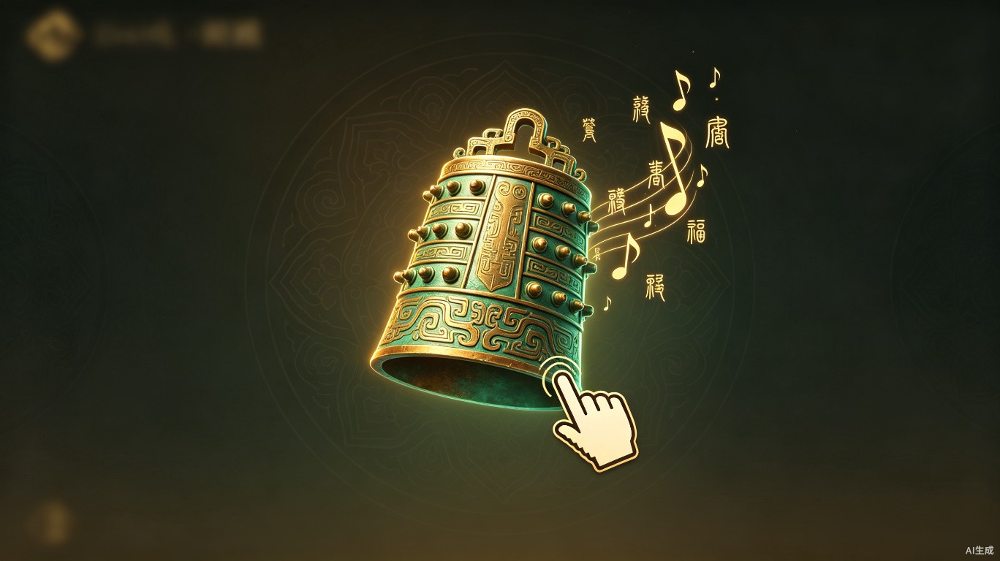
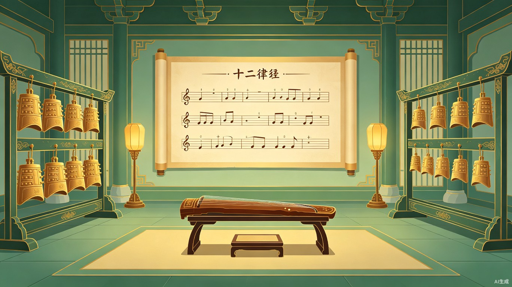

千年之音，沉睡于纸面
中国现存超过 3000 首古琴曲和大量工尺谱、减字谱，但经常被演奏的不足百首。[1] 编钟等国宝级青铜乐器深藏博物馆，普通人无法触碰。大众与千年前的华夏乐音之间，隔着一道厚厚的"玻璃墙"。
AI + 游戏，唤醒沉睡的钟声
钟鸣九霄 是一款以中国古代礼乐文化为主题的互动音乐解谜游戏。 AI 读懂古籍中的乐谱，数字孪生还原编钟音色，让玩家在游戏过程中亲手"奏响"千年古乐。
"一钟双音"——每个编钟的正鼓部和侧鼓部能发出两个不同音高的乐音，这是2400年前中国青铜铸造技术的巅峰之作，在世界音乐史上绝无仅有。
—— 曾侯乙编钟（公元前433年）
三大幕，一场穿越千年的乐旅
玩家扮演一位穿越到古代的"乐官"，在一座神秘的藏书阁中探索。AI 从真实的古籍文献中提取古乐谱片段，生成解谜关卡。
- 关卡素材来源于《乐书要录》《碣石调·幽兰》减字谱、曾侯乙编钟铭文等真实历史文献
- 玩家通过观察、推理、拼合等交互方式"破译"古乐谱
- 每一关对应一首真实的古曲片段，完成后解锁该曲目的演奏权
- 难度递进：从简单的工尺谱到复杂的减字谱组合
破译乐谱后，玩家进入虚拟编钟演奏空间。利用 AI 数字孪生技术还原的编钟音色，亲手"敲击"编钟演奏出刚才解译的古曲旋律。
- 基于"中华礼乐声学数据库"的真实编钟采样音源（频率偏差 ±3 音分）[2]
- 利用编钟"一钟双音"（正鼓音 + 侧鼓音）特性设计特殊关卡
- 玩家需要找到每个钟的正确敲击位置来演奏完整旋律
- 音色实时反馈，体验与真编钟无异的声学效果
收集足够曲目后，玩家可以编排自己的"礼乐大典"演出，AI 根据收集的曲目自动生成和声配器与场景音效。
- AI 自动编排和声与配器，模拟古代礼乐演奏场景
- 演出作品可录屏分享到社交平台
- 每周排行：最受欢迎的编钟演奏作品获得"乐官"称号
不止于游戏

技术实现路线
全程使用 TRAE Work 构建，AI 驱动的"古籍 → 乐谱 → 音频 → 游戏"全链路。
AI 驱动的古籍活化工作流
从纸面到声音、从声音到游戏，AI 将古乐复原效率提升数个数量级。
采集：古籍 / 老录音 / 考古数据
对接上海音乐学院古谱数据库、中华礼乐声学数据库等国家级数字资源
预处理：标准化 & 归一化
AI OCR 识别古谱字符，将减字谱/工尺谱转译为标准化数字乐谱格式
生成：AI 音乐模型输出
基于乐谱片段和乐器音色库，AI 生成高保真古乐音频（约2.3秒/片段）
审核：专家验证
音乐学家审核调式、配器、情感等维度，确保历史准确性
游戏化：交互关卡生成
将审核通过的古曲片段自动封装为解谜关卡和演奏任务
归档：数字博物馆 & 社交分享
玩家演奏作品归档至数字博物馆，支持社交平台分享传播
面向谁，在何时，为何用
| 用户群体 | 使用场景 | 核心诉求 |
|---|---|---|
| 国风文化爱好者 18-35岁 |
碎片化娱乐时间 社交分享 |
在游戏中深度体验传统文化，而非浅层"换皮" |
| 音乐教育 中小学生 & 教师 |
课堂互动 课后练习 |
趣味化传统音乐教学工具，降低学习门槛 |
| 亲子家庭 | 亲子共玩 文化启蒙 |
在娱乐中接触传统文化，寓教于乐 |
| 文旅场景 博物馆游客 |
参观延伸体验 文化纪念品 |
扫码即玩的编钟体验，带不走文物但能带走声音 |
价值与意义
文化传承与活化
将国家级文化遗产从"学术象牙塔"推向"大众指尖"。中华礼乐声学数据库（217件青铜钟3D模型与声学数据）和上海音乐学院古谱数据库目前仅服务于学术研究，本项目首次将其游戏化，实现古籍活化与非遗创新开发。同时叠加大赛"社会公益"附加赛题，双重赛道参与。
蓝海市场定位
全球尚无以编钟"一钟双音"为核心机制的深度游戏产品，市场空白明确。国风音游赛道持续增长，《万华律》等产品验证了市场需求。以"礼乐文明"这一独特IP切入，具备强商业潜力和传播话题性。
AI 赋能传统文化工作流
传统古乐"打谱"需专家数月甚至数年。本项目构建的"AI古籍乐谱解译 → 数字音源生成 → 游戏化体验"流水线，可将古乐从纸面到声音的转化效率提升数个数量级，为更多古籍活化项目提供可复用范式。
市场对标与差异化
| 产品 | 类型 | 核心乐器 | 古籍深度连接 | AI驱动 |
|---|---|---|---|---|
| 钟鸣九霄（本项目） | 音乐解谜游戏 | 编钟（一钟双音） | 深度 | 全链路 |
| 万华律 | 节奏音游 | 二胡/琵琶/古筝 | 无 | 无 |
| 曲中剑 | 音游+武侠 | 古筝 | 弱 | 无 |
| 华夏人生 | 沙盒模拟 | 编钟（简化） | 弱 | 无 |
| VR编钟课堂 | 教育应用 | 编钟 | 中等 | 无 |